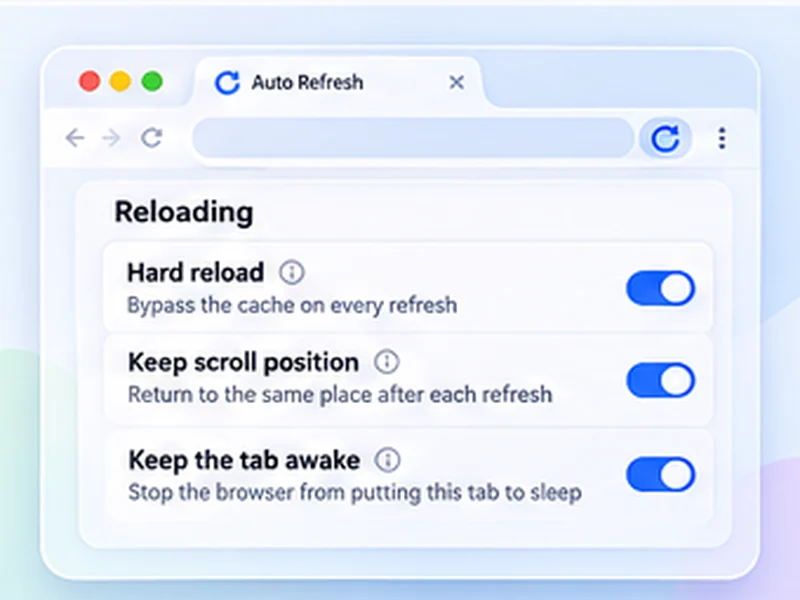

How to hard refresh in any browser.
A hard refresh reloads a page and ignores the copies your browser saved. Here is the shortcut for every browser, on Windows and Mac.

What a hard refresh does
To load pages faster, browsers keep copies of images, styles and scripts in a cache. A normal refresh may reuse those copies, so you can end up looking at an old version of a page.
A hard refresh (also called a hard reload or force refresh) tells the browser to fetch everything again from the website. It is the first thing to try when a site looks broken or will not show a recent change.
Hard refresh shortcuts
Chrome, Edge, Brave on Windows
Press Ctrl + Shift + R, or Ctrl + F5.
Chrome, Edge, Brave on Mac
Press Cmd + Shift + R.
Firefox on Windows
Press Ctrl + Shift + R, or Ctrl + F5.
Firefox on Mac
Press Cmd + Shift + R.
Safari on Mac
Press Cmd + Option + R, or hold Shift and click the reload button.
Empty Cache and Hard Reload in Chrome
Chrome has a stronger option hidden in the developer tools. Press F12 to open DevTools, then right-click the reload button next to the address bar. You get three choices: Normal Reload, Hard Reload, and Empty Cache and Hard Reload.
The last one clears the cache for that page before reloading, which also refreshes files loaded later by scripts. The menu only appears while DevTools is open.
Hard refresh on a phone
Mobile browsers have no hard refresh shortcut. In Chrome for Android, open the menu, go to Settings, Privacy and security, Delete browsing data, and clear Cached images and files. On iPhone, clear website data for the site in Settings, Safari.
Hard reload automatically, on a timer
If you need a fresh copy again and again, for example while editing a site or watching a heavily cached page, do it on a schedule. In Free Auto Refresh, turn on Hard reload and every automatic refresh bypasses the cache, exactly like Ctrl + Shift + R. See automatic hard reload.
When a hard refresh does not help
- The server is caching. A CDN or caching plugin is serving a stored copy. Only the site owner can purge that.
- A service worker is in the way. In Chrome DevTools, open Application, Service Workers, and click Unregister.
- It is your DNS or connection. Try a private window or another network to rule out your own machine.
Questions, answered.
What is the hard refresh shortcut in Chrome?
Ctrl + Shift + R on Windows and Linux, Cmd + Shift + R on Mac. Ctrl + F5 also works on Windows.
How do I hard refresh on a Mac?
Cmd + Shift + R in Chrome, Firefox and Edge. In Safari, use Cmd + Option + R.
Is a hard refresh the same as clearing the cache?
No. A hard refresh skips the cache for one page load. Clearing the cache deletes the stored files for all sites.
Does a hard refresh delete my passwords or cookies?
No. It only ignores cached files. You stay signed in.
What is the difference between Ctrl + F5 and Ctrl + R?
Ctrl + R is a normal refresh that may use cached files. Ctrl + F5 forces everything to be downloaded again.
Can I make every refresh a hard refresh?
Yes, with Free Auto Refresh: switch on Hard reload and each automatic refresh bypasses the cache.
Skip the manual reloads.
Free Auto Refresh does it on a timer, for Chrome and Firefox.
Not seeing the feature you need?
Share the browser task you would like to make easier. Your idea helps guide what gets built next.